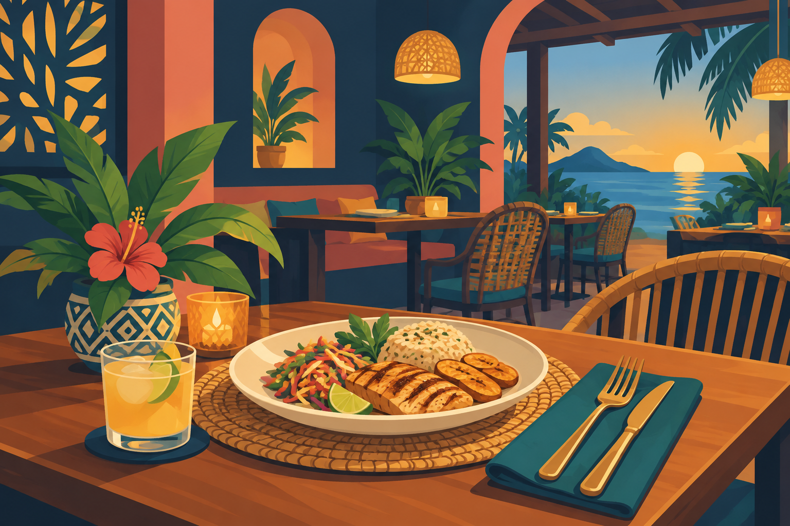
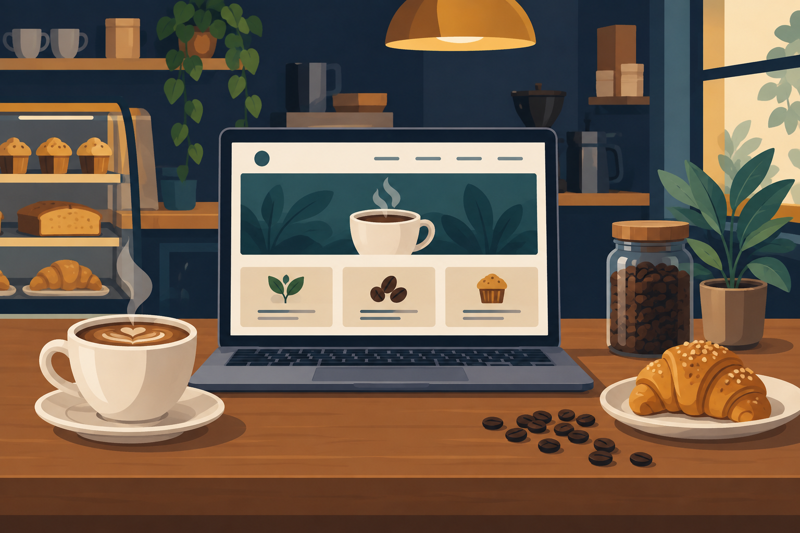
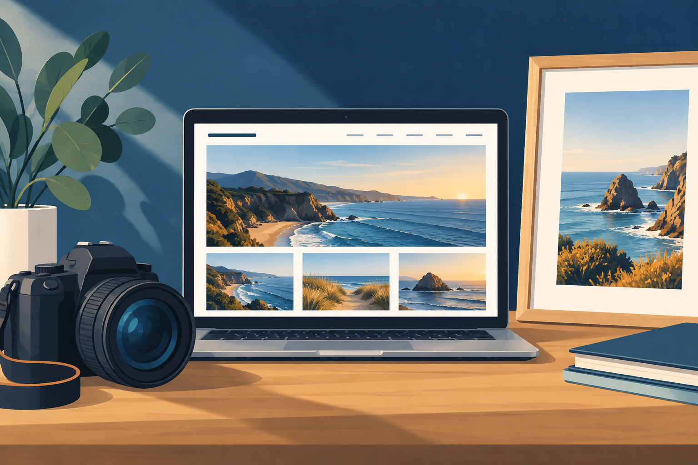

Restaurante Sabor Isleño
Este proyecto presenta el menú, los horarios y la ubicación de un restaurante ficticio. Su estructura se adapta a teléfonos y computadoras.
Solicitar un proyecto similarPortafolio profesional
Soluciones digitales responsivas para pequeñas empresas.
Solicitar informaciónDescripción de las funciones incluidas en cada proyecto.

Este proyecto presenta el menú, los horarios y la ubicación de un restaurante ficticio. Su estructura se adapta a teléfonos y computadoras.
Solicitar un proyecto similar
El sitio presenta bebidas, productos y actividades de una cafetería ficticia. Las secciones usan el sistema de columnas de Bootstrap.
Solicitar un proyecto similar
Este portafolio ficticio presenta trabajos fotográficos y opciones de reservación. Las imágenes cambian de tamaño según la pantalla.
Solicitar un proyecto similar